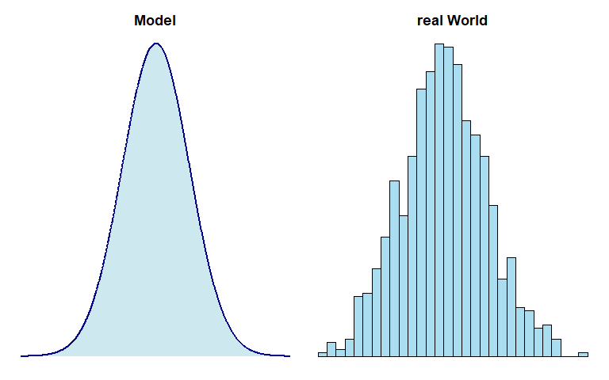
2 Statistical Distributions
2.1 Why distributions?
2.2 Types of data

- Nominal Data:
- Description: Nominal data represents categories with no inherent order or ranking.
- Examples: Colors, gender, or types of fruits.
- Characteristics: Categories are distinct, but there is no meaningful numerical value associated.
- Ordinal Data:
- Description: Ordinal data has categories with a meaningful order or ranking, but the intervals between them are not consistent or measurable.
- Examples: Educational levels (e.g., high school, bachelor’s, master’s), customer satisfaction ratings (e.g., low, medium, high).
- Characteristics: The order is significant, but the differences between categories are not precisely quantifiable.
- Discrete Data:
- Description: Discrete data consists of separate, distinct values, often counted in whole numbers and with no intermediate values between them.
- Examples: Number of students in a class, number of cars in a parking lot.
- Characteristics: The data points are distinct and separate; they do not have infinite possible values within a given range.
- Continuous Data:
- Description: Continuous data can take any value within a given range and can be measured with precision.
- Examples: Height, weight, temperature.
- Characteristics: Values can be any real number within a range, and there are theoretically infinite possible values within that range.
2.2.1 Nominal Data
Nominal data is a type of data that represents categories or labels without any specific order or ranking. These categories are distinct and non-numeric. For example, colors, types of fruits, or gender (male, female, other) are nominal data. Nominal data can be used for classification and grouping, but mathematical operations like addition or subtraction do not make sense in this context.
2.2.2 Ordinal Data

Ordinal data represents categories that have a specific order or ranking. While the categories themselves may not have a consistent numeric difference between them, they can be arranged in a meaningful sequence. A common example of ordinal data is survey responses with options like “strongly agree,” “agree,” “neutral,” “disagree,” and “strongly disagree.” These categories indicate a level of agreement, but the differences between them may not be uniform or measurable.
2.2.3 Discrete Data
Discrete data consists of distinct, separate values that can be counted and usually come in whole numbers. These values can be finite or infinite, but they are not continuous. Examples include the number of students in a class, the count of cars in a parking lot, or the quantity of books in a library. Discrete data is often used in counting and can be represented as integers.
One quote in the literature about discrete data, shows how difficult the classification of data types can become (J. Bibby (1980)): “… All actual sample spaces are discrete, and all observable random variables have discrete distributions. The continuous distribution is a mathematical construction, suitable for mathematical treatment, but not practically observable. …”
2.2.4 Continous Data

Continuous data encompasses a wide range of values within a given interval and can take on any real number. There are infinite possibilities between any two points in a continuous dataset, making it suitable for measurements with high precision. Examples of continuous data include temperature, height, weight, and time. It is important to note that continuous data can be measured with decimals or fractions and is not limited to whole numbers.
2.3 Uniform Distribution
2.3.1 Dice


2.3.2 Types of uniform distributions
- All outcomes in the range are equally probable
- The “range” can be:
- a finite set of values (discrete)
- a continuous interval (continuous)
\[\begin{align} X \sim \mathrm{Uniform}(a,b) \text{ continuous}\\ X \sim \mathrm{Uniform}\{a,a+1,\ldots,b\} \text{ discrete} \end{align}\]
2.3.3 Core properties
Core Properties: Discrete vs. Continuous Uniform Distributions |
||
|---|---|---|
Equal probability everywhere, but for different types of data |
||
Property |
Discrete Uniform |
Continuous Uniform |
Probability |
Equal for each outcome. |
Equal density over the interval. |
Symmetry |
Mean = midpoint of the range. |
Mean = midpoint of the interval. |
Intuition |
‘Fair die’ with n sides. |
‘Fair spinner’ on a line segment. |
Use Cases |
Counting problems (e.g., dice, cards). |
Measuring problems (e.g., time, space). |
Note: Both distributions share the ‘fairness’ property but apply to different data types. |
||
2.4 Probability Mass Function (PMF)
2.4.1 But why?
- PMFs provide a way to calculate and assign probabilities to each distinct outcome.
- Each outcome is assigned a probability that corresponds to its position in the total number of outcomes.
2.4.2 Basics
… assigns each outcome the same probability that always sum up to \(1\) (example: six-sided die)
\(X \sim \mathrm{Uniform}\{a,b\}\) where \(a\) and \(b\) are integers and \(a\leq b\)
\[\begin{align} f(k) = P (X = k) \end{align}\]
- \(k\) meaning a specific value that \(X\) can take (e.g., \(k = 0,1,2, ...\))
- \(f(k)\) is the probability that \(X\) equals \(k\)
2.4.3 Key Properties
- \(0 \leq f(k) \leq 1\) for all \(k\)
- The of probabilities over all possible \(k\) must equal \(1\)
\[\begin{align} \sum_{all \; k}f(k) = 1 \end{align}\]
2.4.4 6-sided die
\[\begin{align} X &\sim \mathrm{Uniform}\{a,a+1, ..., b\} \\ X &\sim \mathrm{Uniform}\{1,2,3,4,5,6\} \end{align}\]
Number of outcomes:
\[\begin{align} N &= b-a+1\\ N &= 6-1+1=6 \end{align}\]
Equal probability for each outcome: \(f(k) = P (X = k)\)
\[\begin{align} f(a) = f(a+1)= ... = f(b) = c \text{ (some constant)} \end{align}\]
Sum of all probabilities must equal 1
\[\begin{align} \sum_{k = a}^b f(k) = \underbrace{c+c+ ... +}_{N\text{times}} = N \cdot c = 1 \end{align}\]
Solving for \(c\)
\[\begin{align} c = \frac{1}{N} = \frac{1}{b-a+1} \end{align}\]
Formal PMF:
\[\begin{align} f(k) = \begin{cases} \frac{1}{b - a + 1} & \text{if } k \in \{a, a+1, \dots, b\}, \\ 0 & \text{otherwise.} \end{cases} \end{align}\]
2.4.5 Exercise
A tool changer in production randomly selects one of four tools (labeled 1 to 4) with equal probability.
- Describe the formal set in \(X \sim ...\)
\(X \sim \mathrm{Uniform}\{1,2,3,4\}\)
- Formally calculate the number of outcomes (\(N\))
\(N = 4-1+1 = 4\)
- Describe the PMF formally
\[\begin{align} f(k) = \begin{cases} \frac{1}{4} & \text{if } k \in \{1,2,3,4\}, \\ 0 & \text{otherwise.} \end{cases} \end{align}\]
- What is the probability to select tool \(2\)
\(P(X = 2) = f(2) = \frac{1}{4} = 0.25\)
2.4.6 Summary PMF
The PMF describes the probability distribution of a discrete random variable.
The probabilities associated with all hypothetical values must be non-negative and sum up to 1.
A PMF is specific to discrete random variables, while a Probability Density Function (PDF) is associated with continuous random variables.
Unlike a PDF, which requires integration over an interval, the PMF directly provides probabilities for individual values.
“mass” is conserved (similar to how physical mass is conserved).
2.5 Binomial Distribution
2.5.1 Classroom example
If we roll a fair six-sided die 10 times, how many times do you expect to get a specific outcome?
- 10 trials
- \(P?\) to roll a \(6\) (expected value)?
- record the number of times a specific outcome occurs
- repeat for 2-4 students
- \(P = 1/6 \approx 16\% \rightarrow P_{10\;times} = 10 * 1/6 = 1.6 times \approx 2\)
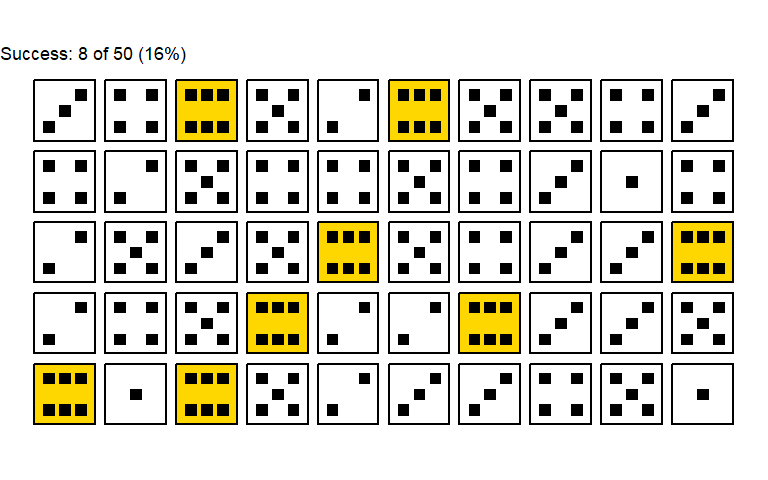
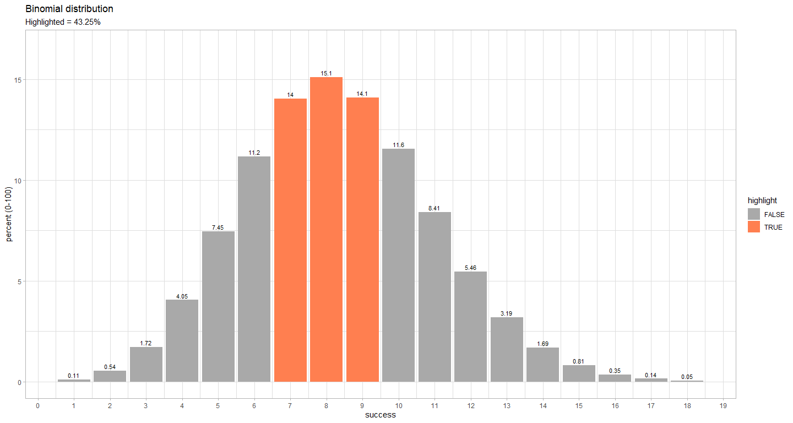
2.5.2 Theory
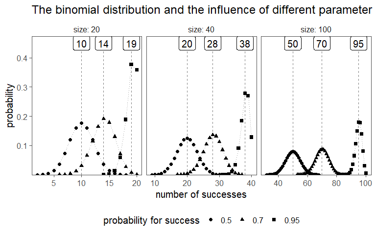
The binomial distribution is a discrete probability distribution that describes the number of successes in a fixed number of independent Bernoulli trials, each with the same probability of success. A Bernoulli trial, named after Swiss mathematician Jacob Bernoulli1, is a random experiment or trial with two possible outcomes: success and failure. These outcomes are typically labeled as \(1\) for success and \(0\) for failure. The key characteristics of a Bernoulli trial are:
Two Outcomes: There are only two possible outcomes in each trial, and they are mutually exclusive. For example, in a coin toss, the outcomes could be heads (success, represented as \(1\)) or tails (failure, represented as \(0\)).
Constant Probability: The probability of success remains the same for each trial. This means that the likelihood of success and failure is consistent from one trial to the next.
Independence: Each trial is independent of others, meaning that the outcome of one trial does not influence the outcome of subsequent trials. For instance, the result of one coin toss doesn’t affect the result of the next coin toss.
Examples of Bernoulli trials include:
- Flipping a coin (heads as success, tails as failure).
- Rolling a die and checking if a specific number appears (the number as success, others as failure).
- Testing whether a manufactured product is defective or non-defective (defective as success, non-defective as failure).
The Bernoulli trial is the fundamental building block for many other probability distributions, including the binomial distribution, which models the number of successes in a fixed number of Bernoulli trials.
The PMF, also known as the discrete probability density function, is a fundamental concept in probability and statistics.
Definition: The PMF describes the probability distribution of a discrete random variable. It gives the probability that the random variable takes on a specific value. In other words, the PMF assigns probabilities to each possible outcome of the random variable.
Formal Representation: For a discrete random variable X, the PMF is denoted as \(P(X = x)\), where \(x\) represents a specific value. Mathematically, the PMF is defined as: \(P(X = x) = \text{{probability that }} X \text{{ takes the value }} x\)
Properties: The probabilities associated with all hypothetical values must be non-negative and sum up to 1. Thinking of probability as “mass” helps avoid mistakes, as the total probability for all possible outcomes is conserved (similar to how physical mass is conserved).
Comparison with PDF: A PMF is specific to discrete random variables, while a PDF is associated with continuous random variables. Unlike a PDF, which requires integration over an interval, the PMF directly provides probabilities for individual values.
Mode: The value of the random variable with the largest probability mass is called the mode.
Measure-Theoretic Formulation: The PMF can be seen as a special case of more general measure-theoretic constructions. It relates to the distribution of a random variable and the probability density function with respect to the counting measure.
The PMF for the binomial distribution is given in \(\eqref{PMFbinom}\).
\[\begin{align} P(X = k) = \binom{n}{k} p^k (1 - p)^{n - k} \label{PMFbinom} \end{align}\]
2.5.3 The drive shaft exercise - Binomial Distribution
In the context of a drive shaft, you can think of it as a model for the number of defective drive shafts in a production batch. Each drive shaft is either good (success) or defective (failure).
Let’s say you have a batch of 100 drive shafts, and the probability of any single drive shaft being defective is \(0.05 (5\%)\). You want to find the probability of having a certain number of defective drive shafts in this batch.
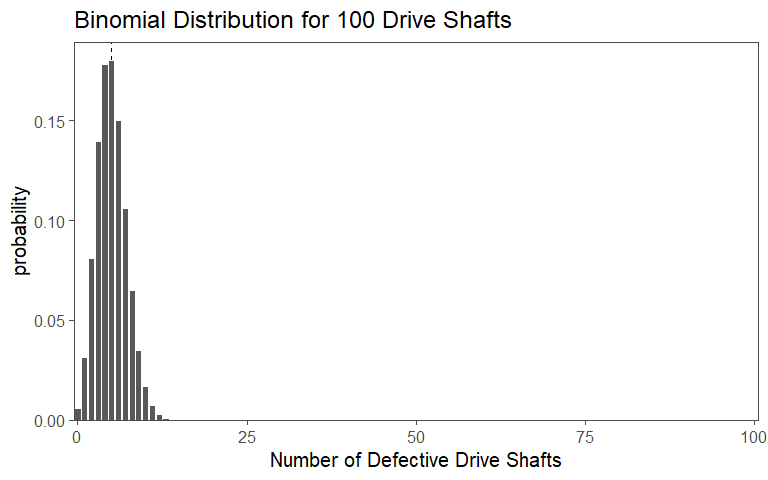
2.6 The Normal Distribution
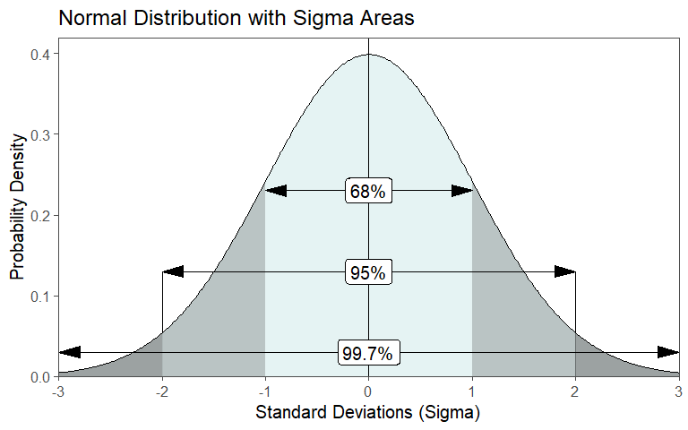
The normal distribution is a fundamental statistical concept that holds immense significance in the realms of engineering and production. It is often referred to as the Gaussian distribution or the bell curve, is a mathematical model that describes the distribution of data in various natural and human-made phenomena, see Johnson (1994). It forms a symmetrical curve when plotted, is centered around a mean (\(\mu_0\)) and balanced on both sides (Figure 2.13). The spread or dispersion of the data points is characterized by \(\sigma_0^2\). Those two parameters completely define the normal distribution. A remarkable property of the normal distribution is the empirical rule, which states that approximately \(68\%\) of the data falls within one standard deviation from the mean, \(95\%\) falls within two standard deviations, and \(99.7\%\) falls within three standard deviations (Figure 2.13). The existence of the normal distribution in the real world is a result of the combination of several factors, including the principles of statistics and probability, the Central Limit Theorem (CLT), and the behavior of random processes in nature and society.
2.6.1 Emergence
2.6.1.1 The math behind
\[P(k) = \binom{n}{k}\cdot{\frac{1}{2}}^n\]

2.6.1.2 Mean and Standard Deviation from the Galton board
- What is the expected value?
\[\mu_0 = \mathrm{E}[X] = np\] \[p = 0.5 \rightarrow \mu = n \times 0.5 = \frac{1}{2}n\]
On average a ball will land in \(k=\frac{n}{2}\)
- What is the spread
\[\sigma_0 = \sqrt{Var} = \sqrt{np(1-p)}\] \(Var(X) = \mathrm{E}[(X-\mu)^2]\) (Variance in general)
\(Var(X) = np(1-p)\) (number of right moves)
2.6.1.3 Understanding spread
\[\sigma^2=np(1-p)\]
- Every step is independent, for a single step (\(p=0.5\)):
\[Var(X) = p(1-p)\]
- Therefore for \(n\) steps:
\[Var(X) = np(1-p) \rightarrow \sigma = \frac{\sqrt{n}}{2}\]
- For \(n = 100\)
\(\sigma = \frac{\sqrt{100}}{2}\) so most balls will land between \(45\) and \(55\)
2.7 Z - Standardization
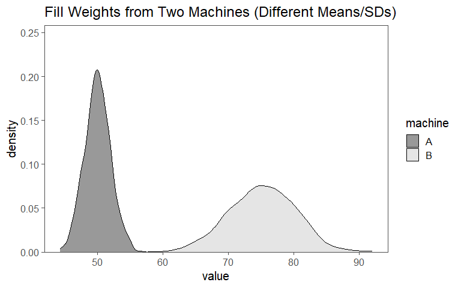
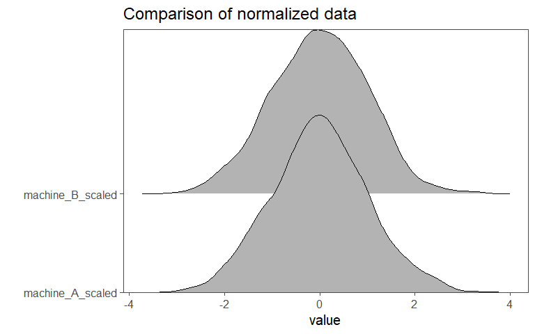
The Standard Score / Z-Score (Z)-standardization, also known as Z or Z, is a common statistical technique used to transform data into a standard normal distribution with a mean of \(0\) and a standard deviation of \(1\) (Taboga 2017). This transformation is useful for comparing and analyzing data that have different scales and units \(\eqref{zscore}\).
\[\begin{align} Z = \frac{x_i - \bar{x}}{sd} \label{zscore} \end{align}\]
How the Z can be applied is shown in Figure 2.14 and Figure 2.15. The data for group X and group Y may be measured in different units ( Figure 2.14). To answer the question, which of the values \(x_i (i=1\ldots5)\) is more probable, the single data points are transformed to the respective z-score using \(\eqref{zscore}\). In Figure 2.15, the Z for both groups are plotted against each other. The perfect correlation of the datapoints shows, that for every \(x_i\) the same probability applies. Thus, the datapoints are comparable.
2.7.1 The drive shaft exercise - Z-Standardization
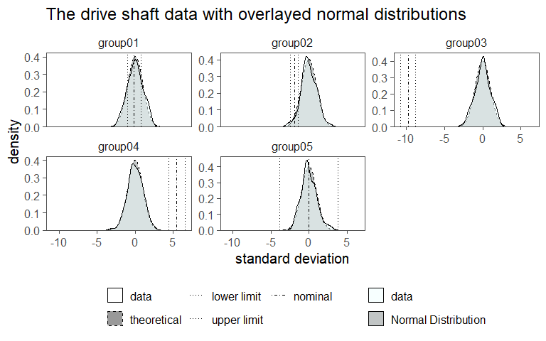
In Figure 2.16 the standardized drive shaft data is shown. The mean of the data (\(\bar{x}\)) is now centered at \(0\) and the standard deviation is \(1\). For this case, the specification limits have also been transferred to the respective Z-score (even though they can not be interpreted as such anymore). For every \(x_i\) the probability to be within a normal distribution is now known. When comparing this to the transferred specification limits, it is clear to see that for group01 “most” of the data points are within the limits in contrast to group03 where none of the data points lies within the specification limits. When looking at group03 we see, that the nominal specification limit is -9.78 standard deviations away from the centered mean of the datapoints. The probability of a data point being located there is 6.8605273^{-23} which does not sound an awful lot. We will dwelve more into such investigation in another chapter, but this is a first step in the direction of inferential statistics.
2.7.2 The Z-transform and the Galton Board

2.7.2.1 Applying the Z-transform
\[Z = \frac{X-\mu}{\sigma}\]
\[Z = \frac{X-\frac{n}{2}}{\frac{\sqrt{n}}{2}}\]
\[\lim_{n\to\infty} P(a\leq Z \leq b)= \int_a^b \frac{1}{\sqrt{2\pi}}e^\frac{-z^2}{2} \,dz \]
2.7.2.2 Converting the bionmial Formula to a Normal Form
Stirling appoximation: \(n!\approx\sqrt{2\pi n} \left( \frac{n}{e} \right)^n\)
Appprox: \(\binom{n}{k} \approx \frac{\sqrt{2\pi n} \left( \frac{n}{e} \right)^n}{\sqrt{2\pi n} \left( \frac{k}{e} \right)^k \cdot \sqrt{2\pi(n-k)} \left( \frac{n-k}{e} \right)^{n-k}}\)
simplifies to: \(\binom{n}{k} = \frac{1}{\sqrt{2\pi n p (1-p)}}e^{-\frac{(k-np)^2}{2np(1-p)}}\)
substituting \(p=0.5\): \(P(X = k) \approx \frac{1}{\sigma\sqrt{2\pi}}e^{-\frac{(k-\mu)^2}{2\sigma^2}}\)
Which is the PDF
2.7.3 The drive shaft exercise - Normal Distribution
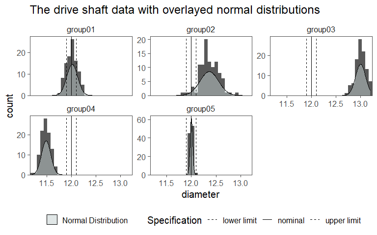
In Figure 2.17 the drive shaft data is shown for each group in a histogram. As an overlay, the respective normal distribution (with the groups \(\bar{x},sd\)) is overlayed. If the data is normally distributed, is a different question.
2.8 PDF

\[\begin{align} f(x) = \frac{1}{\sigma\sqrt{2\pi}}e^{-\frac{1}{2}(\frac{x-\mu}{\sigma})^2} \end{align}\]
A PDF is a mathematical function that describes the likelihood of a continuous random variable taking on a particular value. Unlike discrete probability distributions, which assign probabilities to specific values of a discrete random variable, a PDF describes the relative likelihood of the variable falling within a particular range of values. The total area under the curve of a PDF over its entire range is equal to 1, indicating that the variable must take on some value within that range. In other words, the integral of the PDF over its entire domain equals 1. The probability of a continuous random variable falling within a specific interval is given by the integral of the PDF over that interval.
2.9 Cumulative Density Function (CDF)

A cumulative density function (CDF), also known as a cumulative distribution function, describes the probability that a random variable will take on a value less than or equal to a given point. It is the integral of the PDF from negative infinity to a certain value. The CDF provides a comprehensive view of the probability distribution of a random variable by showing how the probability accumulates as the value of the random variable increases. Unlike the PDF, which gives the probability density at a particular point, the CDF gives the cumulative probability up to that point.
\[\begin{align} z &= \frac{x-\mu}{\sigma} \nonumber \\ \varphi(x) &= \frac{1}{2\pi}e^{\frac{-z^2}{2}} \\ \phi(x)& = \int \frac{1}{2\pi}e^{\frac{-x^2}{2}} \, dx \\ \lim_{x\to\infty} \phi(x) &= 1 \nonumber \\ \lim_{x\to - \infty} \phi(x) &= 0 \nonumber \end{align}\]
2.10 Likelihood and Probability
- Likelihood
- refers to the chance or plausibility of a particular event occurring given certain evidence or assumptions. It is often used in statistical inference, where it indicates how well a particular set of parameters (or hypotheses) explain the observed data. Likelihood is a measure of how compatible the observed data are with a specific hypothesis or model.
- Probability
- represents the measure of the likelihood that an event will occur. It is a quantification of uncertainty and ranges from \(0\) (indicating impossibility) to \(1\) (indicating certainty). Probability is commonly used to assess the chances of different outcomes in various scenarios.
In summary, while both likelihood and probability deal with the chance of events occurring, likelihood is often used in the context of comparing different hypotheses or models based on observed data, while probability is more broadly used to quantify the chances of events happening in general.
2.11 Chi2 - Distribution
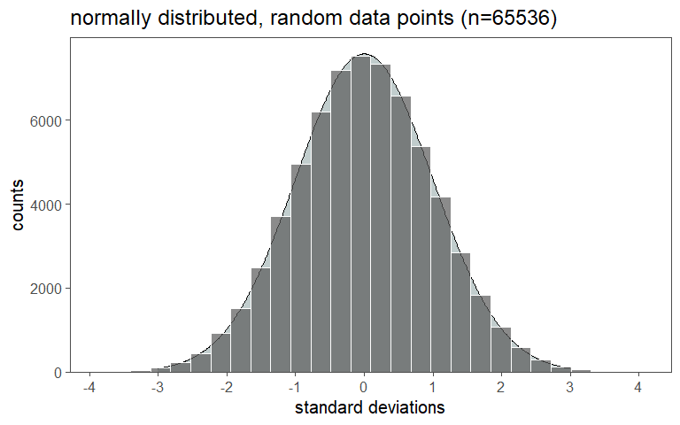

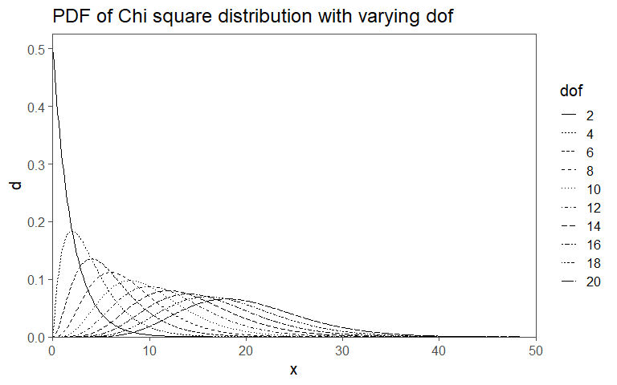
The \(\chi^2\) distribution is a continuous probability distribution that is widely used in statistics (Taboga 2017). It is often used to test hypotheses about the independence of categorical variables.
\[\begin{align} \chi^2 = \sum_{k = 1}^n \frac{(O_k - E_k)^2}{E_k} \end{align}\]
The connection between the chi-squared distribution and sample variance holds significant importance in statistics.
Distribution of Sample Variance: When calculating the sample variance from a dataset, it follows a chi-squared distribution. Specifically, for a random sample from a normally distributed population with mean \(\mu_0\) and variance \(\sigma_0^2\), the sample variance (adjusted for bias) divided by \(\sigma_0^2\) follows a \(\chi^2\) distribution with \(n-1\) degree of freedom (dof), where \(n\) is the sample size.
Hypothesis Testing: In statistical analysis, hypothesis testing is a common technique for making inferences about populations using sample data. The \(\chi^2\) distribution plays a crucial role in hypothesis testing, especially when comparing variances between samples.
- \(\chi^2\) Test for Variance: The \(\chi^2\) distribution is used to test whether the variance of a sample matches a hypothesized variance. This is applicable in various scenarios, such as quality control, to assess the consistency of a manufacturing process.
Confidence Intervals: When estimating population parameters like population variance, it’s essential to establish confidence intervals. The \(\chi^2\) distribution aids in constructing these intervals, allowing researchers to quantify the uncertainty associated with their parameter estimates.
Model Assessment: In regression analysis, the \(\chi^2\) distribution is related to the F-statistic, which assesses the overall significance of a regression model. It helps determine whether the regression model is a good fit for the data.
In summary, the link between the chi-squared distribution and sample variance is fundamental in statistical analysis. It empowers statisticians and analysts to make informed decisions about population parameters based on sample data and evaluate the validity of statistical models. Understanding this relationship is essential for those working with data and conducting statistical investigations.
2.11.1 The drive shaft exercise - Chi2 Distribution
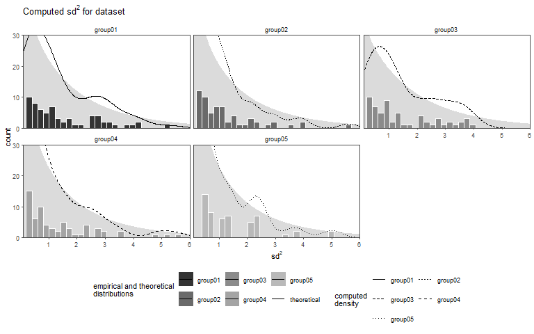
In Figure 2.22 the squared standad deviation for every datapoint (from the stanardized data) is shown as a histogram for every group with an overlayed (and scaled) density plot. In the background of every group the theoretical \(\chi^2\)-distribution with \(dof = 1\) is plotted to visually compare the empirical distribution of the datapoints to the theorectial.
2.12 t - Distribution
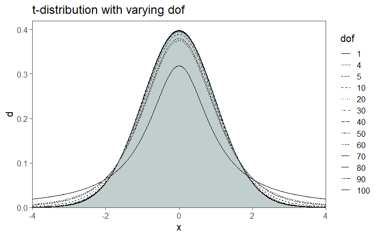
The t-distribution, also known as the Student’s t-distribution (Student 1908), is a probability distribution that plays a significant role in statistics2. It is a symmetric distribution with a bell-shaped curve, similar to the normal distribution, but with heavier tails. The key significance of the t-distribution lies in its application to inferential statistics, particularly in hypothesis testing and confidence interval estimation.
Small Sample Sizes: When dealing with small sample sizes (typically less than 30), the t-distribution is used to make inferences about population parameters, such as the mean. This is crucial because the normal distribution assumptions are often violated with small samples.
Accounting for Variability: The t-distribution accounts for the variability inherent in small samples. It provides wider confidence intervals and more conservative hypothesis tests compared to the normal distribution, making it more suitable for situations where sample size is limited.
Degrees of Freedom: The shape of the t-distribution is determined by a parameter called dof. As the dof increases, the t-distribution approaches the normal distribution. When df is small, the tails of the t-distribution are fatter, allowing for greater uncertainty in estimates.
Statisticians found that if they took samples of a constant size from a normal population, computed a statistic called a t-score for each sample, and put those into a relative frequency distribution, the distribution would be the same for samples of the same size drawn from any normal population. The shape of this sampling distribution of t’s varies somewhat as sample size varies, but for any \(n\), it is always the same. For example, for samples of \(5\), \(90\%\) of the samples have t-scores between \(-1.943\) and \(+1.943\), while for samples of \(15\), \(90\%\) have t-scores between \(\pm 1.761\). The bigger the samples, the narrower the range of scores that covers any particular proportion of the samples \(\eqref{tscore}\) (Note the similarity to \(\eqref{zscore}\)). Since the t-score is computed for every \(x_i\) the resulting sampling distribution is called the t-disitribution.
\[\begin{align} t_i = \frac{x_i - \mu_o}{sd/\sqrt{n}} \label{tscore} \end{align}\]
In Figure 2.23 it is shown, that with increasing dof (in this case sample size), the t-distribution approximates a normal distribution (gray area). Figure 2.23 also shows an example of the t-distribution in action. Of all possible samples with 9 \(dof\) \(0.025\;(2\frac{1}{2}\%)\) of those samples would have t-scores greater than \(2.262\), and \(.975\;(97.5\%)\) would have t-scores less than \(2.262\). The advantage of the t-score and t-distribution is clearly visible. All these values can be computed from sampled data, the population can remain estimated \(\eqref{tscore}\).
2.12.1 The drive shaft exercise - t-Distribution
The t-score computation and the z-standardization look very familiar. While the z-score calculation needs some population parameters, the t-score calculation does not need such. It therefore allows us, to estimate population parameters based on a sample - a very frequent use case in statistics.
Suppose we have some data (maybe the drive shaft exercise?) with which calculations can be done. First, the mean \(\bar{x}\) and \(sd\) is calculated according to \(\eqref{mean}\) and \(\eqref{sd}\). After this, the confidence level (cl) (we will get to this later in more detail) is specified. A value of \(95\%\) is a common choice of cl.
\[\begin{align} ci &= 0.95 \quad \text{(for a 95\% confidence level)} \end{align}\]
Then the Standard Error (SE) is calculated using \(\eqref{se}\), which takes the \(sd\) and \(n\) of a sample into account (notice, how we did not use any population estimation?).
\[\begin{align} SE &= \frac{sd}{\sqrt{n}} \label{se} \end{align}\]
In the next step, the critical t-score is calculated using the cl as shown in \(\eqref{tscore}\). qt in this case returns the value of the inverse CDF of the t-distribution given a certain random variable (or datapoint \(x_i\)) and \(n-1\) dof. Think of it as an automated look up in long statistical tables.
\[\begin{align} % Step 5: Calculate the T-score t_{score} &= qt\left(\frac{1 - ci}{2}, df = n - 1\right) \label{tscore} \end{align}\]
With this, the margin of error can be calculated using the SE and the t-score as shown in \(\eqref{errormargin}\).
\[\begin{align} % Step 6: Calculate the margin of error margin\;of\;error &= t_{score} \times SE \label{errormargin} \end{align}\]
In the last step the Confidence Interval is calculated for the lower and the upper bound with \(\eqref{cilobound}\) and \(\eqref{cihibound}\).
\[\begin{align} % Step 7: Determine the confidence interval lo &= \bar{x} - margin\;of\;error \label{cilobound} \\ hi &= \bar{x} + margin\;of\;error \label{cihibound} \end{align}\]
It all looks and feels very similar to using the normal disitrbution. Why this is the case, is shown in Figure 2.24. In ?fig-ds-t-1 the raw dataset is shown with the underlayed specification limits for the manufacturing of the drive shaft. For some groups the judgement if the drive shaft is wihtin specification is quite clear (group 1, group 2 and group 5). For the other groups, this can not be done so easily. For the drive shaft data, we of course now some population data, therefore the normal distribution can be compared to the t-distribution. This is done in ?fig-ds-t-2. On the x-axis the diameter is shown, the y-axis depicts the groups (as before). The distribution on top of the estimated parameters is the population (normal distribution), the distribution on the bottom follow a t-distribution. With \(n>30\) (as for this dataset), the difference between distribution is very small, further showcasing the use of the t-distribution (also see Figure 2.23 for comparison).
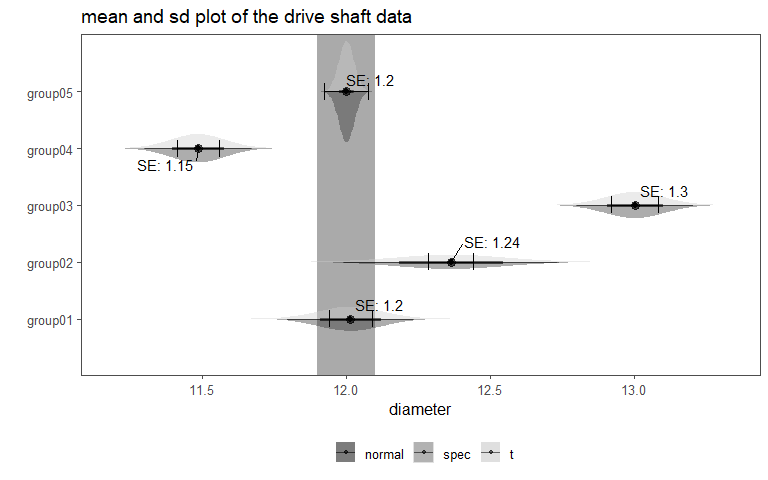
2.13 F - Statistics
F-statistics, also known as the F-test or F-ratio, is a statistical measure used in Analysis of Variance (ANOVA) and regression analysis (Taboga 2017). It assesses the ratio of two variances, indicating the extent to which the variability between groups or models is greater than the variability within those groups or models. The F-statistic plays a crucial role in hypothesis testing and model comparison.
Significance of F-statistics: The significance of the F-statistic lies in its ability to help researchers determine whether the differences between group means or the goodness-of-fit of a regression model are statistically significant. In ANOVA, a high F-statistic suggests that at least one group mean differs significantly from the others, while in regression analysis, it indicates whether the regression model as a whole is a good fit for the data.
Applications of F-statistics: 1. Analysis of Variance ANOVA: F-statistics are extensively used in ANOVA to compare means across two or more groups. It helps determine whether there are significant differences among the means of these groups. For example, an ANOVA might be used to compare the mean test scores of students taught using different teaching methods.
- Regression Analysis: F-statistics are used in regression analysis to assess the overall significance of a regression model. Specifically, in multiple linear regression, it helps determine whether the model, which includes multiple predictor variables, is better at explaining the variance in the response variable compared to a model with no predictors. It tests the null hypothesis that all coefficients of the model are equal to zero.
The dof in an F-distribution refer to the two sets of numbers that determine the shape and properties of the distribution (Figure 2.25).
Numerator Degrees of Freedom (\(dof_1\)): The numerator degrees of freedom, often denoted as \(dof_1\), is associated with the variability between groups or models in statistical analyses (Figure 2.25 - horizontal axis). In the context of ANOVA, it represents the dof associated with the differences among group means. In regression analysis, it is related to the number of predictors or coefficients being tested simultaneously.
Denominator Degrees of Freedom (\(dof_2\)): The denominator degrees of freedom, often denoted as \(dof_2\), is associated with the variability within groups or models (Figure 2.26 - vertical axis). In ANOVA, it represents the degrees of freedom associated with the variability within each group. In regression analysis, it is related to the error or residual degrees of freedom, indicating the remaining variability not explained by the model.
The F-distribution is used to compare two variances: one from the numerator and the other from the denominator. The F-statistic, calculated as the ratio of these variances, follows an F-distribution \(\eqref{fdist}\).
\[\begin{align} f(x; dof_1, dof_2) = \frac{{\Gamma\left(\frac{{dof_1 + dof_2}}{2}\right)}}{{\Gamma\left(\frac{{dof_1}}{2}\right)\Gamma\left(\frac{{dof_2}}{2}\right)}} \left(\frac{{dof_1}}{{dof_2}}\right)^{\frac{{dof_1}}{2}} \frac{{x^{\frac{{dof_1}}{2} - 1}}}{{\left(1 + \frac{{dof_1}}{{dof_2}}x\right)^{\frac{{dof_1 + dof_2}}{2}}}} \label{fdist} \\ F_{m,n} = \frac{\chi^2_m/m}{\chi^2_n/n} \end{align}\]
In practical terms: A higher numerator degrees of freedom (\(dof_1\)) suggests that there are more groups or predictors being compared, which may result in larger F-statistic values. A higher denominator degrees of freedom (\(dof_2\)) implies that there is more data within each group or model, which may lead to smaller F-statistic values. The F-distribution is right-skewed and always positive. It has different shapes depending on the values of \(dof_1\) and \(dof_2\) (Figure 2.26). The exact shape is determined by these degrees of freedom and cannot be altered by changing sample sizes or data values (Figure 2.26). Researchers use F-distributions to conduct hypothesis tests, such as F-tests in ANOVA and F-tests in regression, to determine if there are significant differences between groups or if a regression model is statistically significant.
In summary, dof in the F-distribution are critical in hypothesis testing and model comparisons. They help quantify the variability between and within groups or models, allowing statisticians to assess the significance of observed differences and make informed statistical decisions.
2.14 Interconnections
Normal Distribution The Normal Distribution is characterized by its mean (\(\mu\)) and standard deviation (\(\sigma\)), see Figure 2.27. It serves as the foundation for many statistical analyses.
Standardized Normal Distribution The Standardized Normal Distribution, denoted as \(Z \sim N(0, 1)\), is a special case of the normal distribution. It has a mean (\(\mu\)) of \(0\) and a standard deviation (\(\sigma\)) of \(1\). It is obtained by standardizing a normal distribution variable \(X\): \(Z = \frac{X - \mu}{\sigma}\) (Figure 2.27).
t Distribution The t Distribution is related to the normal distribution and depends on dof. As dof increases, the t-distribution approaches the standard normal distribution (Figure 2.27).
Chi-Square Distribution The Chi-Square Distribution is indirectly connected to the normal distribution through the concept of “sum of squared standard normals.” When standard normal random variables (\(Z\)) are squared and summed, the resulting distribution follows a chi-square distribution.
F Distribution The F Distribution arises from the ratio of two independent chi-square distributed random variables. It is used for comparing variances between groups in statistical tests like ANOVA.

2.15 Weibull - Distribution
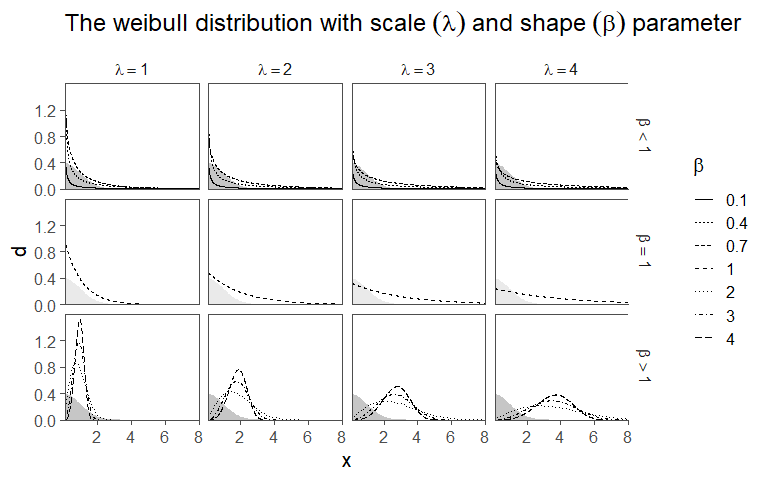
The Weibull distribution is a probability distribution frequently used in statistics and reliability engineering to model the time until an event, particularly failures or lifetimes. It is named after Wallodi Weibull3, who developed it in the mid-20th century (Weibull 1951).
The Weibull distribution is characterized by two parameters:
Shape Parameter (\(\beta\)): This parameter determines the shape of the distribution curve and can take on values greater than 0. Depending on the value of \(\beta\), the Weibull distribution can exhibit different behaviors:
If \(\beta < 1\), the distribution has a decreasing failure rate, indicating that the probability of an event occurring decreases over time. This is often associated with “infant mortality” or early-life failures. If \(\beta = 1\), the distribution follows an exponential distribution with a constant failure rate over time. If \(\beta > 1\), the distribution has an increasing failure rate, suggesting that the event becomes more likely as time progresses. This is often associated with “wear-out” failures.
Scale Parameter (\(\lambda\)): This parameter represents a characteristic scale or location on the time axis. It influences the position of the distribution on the time axis. A larger \(\lambda\) indicates that events are more likely to occur at later times.
Applications: - Reliability Engineering: The Weibull distribution is extensively used in reliability engineering to assess the lifetime and failure characteristics of components and systems. Engineers can estimate the distribution parameters from data to predict product reliability, set warranty periods, and plan maintenance schedules.
Survival Analysis: In medical research and epidemiology, the Weibull distribution is employed to analyze survival data, such as time until the occurrence of a disease or death. It helps in modeling and understanding the progression of diseases and the effectiveness of treatments.
Economics and Finance: The Weibull distribution is used in finance to model the time between financial events, like market crashes or loan defaults. It can provide insights into risk assessment and portfolio management.
2.15.1 The drive shaft exercise - Weibull distribution
The Weibull distribution can be applied to estimate the probability of a part to fail after a given time. Suppose there have been \(n=100\) drive shafts produced. In order to assure that the assembled drive shaft would last during their service time, they have been tested in a test-stand that mimics the mission profile4 of the product. This process is called qualification and a big part of any product development (Meyna 2023). The measured hours are shown in Figure 2.29 in a histogram of the data. On the x-axis the Time to failureis shown, while the y-axis shows the number of parts that failed within the time. They histogram plot is overlayed with an empirical density plot as a solid line, as well as the theoretical distribution as a dotted line (Luckily, we know the distribution parameters).

2.16 Poisson - Distribution
The Poisson distribution is a probability distribution commonly used in statistics to model the number of events that occur within a fixed interval of time or space, given a known average rate of occurrence. It is named after the French mathematician Siméon Denis Poisson5.
The Poisson distribution is an applicable probability model in such situations under specific conditions:
1. Independence: Events should occur independently of each other within the specified interval of time or space. This means that the occurrence of one event should not affect the likelihood of another event happening.
2. Constant Rate: The average rate (lambda, denoted as \(\lambda\)) at which events occur should be constant over the entire interval. In other words, the probability of an event occurring should be the same at any point in the interval.
3. Discreteness: The events being counted must be discrete in nature. This means that they should be countable and should not take on continuous values.
4. Rare Events: The Poisson distribution is most appropriate when the events are rare, meaning that the probability of more than one event occurring in an infinitesimally small interval is negligible. This assumption helps ensure that the distribution models infrequent events.
5. Fixed Interval: The interval of time or space in which events are counted should be fixed and well-defined. It should not vary or be open-ended.
6. Memorylessness: The Poisson distribution assumes that the probability of an event occurring in the future is independent of past events. In other words, it does not take into account the history of events beyond the current interval.
7. Count Data: The Poisson distribution is most suitable for count data, where you are interested in the number of events that occur in a given interval.
In the context of a Poisson distribution, the parameter lambda (\(\lambda\)) represents the average rate of events occurring in a fixed interval of time or space. It is a crucial parameter that helps define the shape and characteristics of the Poisson distribution.
Average Rate: \(\lambda\) is a positive real number that represents the average or expected number of events that occur in the specified interval. It tells you, on average, how many events you would expect to observe in that interval.
Rate of Occurrence: \(\lambda\) quantifies the rate at which events happen. A higher value of \(\lambda\) indicates a higher rate of occurrence, while a lower value of \(\lambda\) indicates a lower rate.
Shape of the Distribution: The value of \(\lambda\) determines the shape of the Poisson distribution. Specifically:
When \(\lambda\) is small, the distribution is skewed to the right and is more concentrated toward zero (Figure 2.30). When \(\lambda\) is moderate, the distribution approaches a symmetric bell shape (Figure 2.30). When \(\lambda\) is large, the distribution becomes increasingly similar to a normal distribution(Figure 2.30).
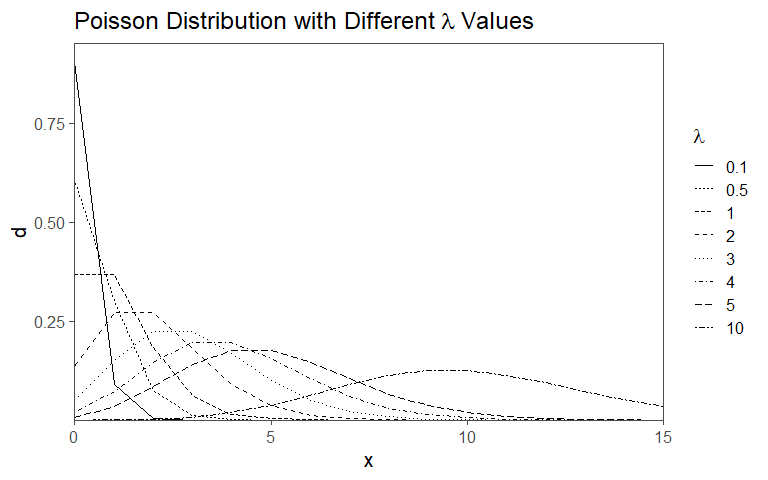
Jacob Bernoulli (1654-1705): Notable Swiss mathematician, known for Bernoulli’s principle and significant contributions to calculus and probability theory.↩︎
William Sealy Gosset (June 13, 1876 - October 16, 1937) was a pioneering statistician known for developing the t-distribution, a key tool in modern statistical analysis.↩︎
Waloddi Weibull (1887–1979) was a Swedish engineer and statistician known for his work on the Weibull distribution, which is widely used in reliability engineering and other fields.↩︎
A mission profile for parts is a detailed plan specifying how specific components in a system should perform, considering factors like environment, performance, safety, and compliance.↩︎
Siméon Denis Poisson (1781-1840) was a notable French mathematician, renowned for his work in probability theory and mathematical physics.↩︎